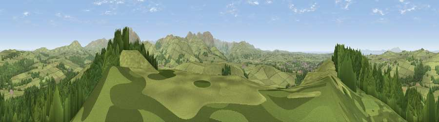

Viewpoint near Embleton
#2070 in England · top 21% of its area beats it · near EmbletonThe view, rendered

A 360° render of this exact spot computed from the terrain model, tree cover and land cover — summer colours, afternoon light, calibrated against photographs of famous viewpoints. Real trees, hedges and buildings will differ in detail.
The panorama
Grey silhouette: terrain skyline in each direction (720 bearings, Earth curvature and refraction included). Dashed green: skyline with trees (+15 m) and buildings (+8 m) as obstacles. Blue strip: how far the ground is visible on each bearing.
Where the view opens
Wedge length = distance to the farthest visible ground on that bearing (vegetation-aware). Rings at 10, 25 and 50 km.
What fills the view
63% grassland · 35% woodland ·
Angular shares of the visible panorama (visual magnitude), not map area. Landscape diversity 0.34 (0–1 Shannon).
Key numbers
More beautiful places nearby
The staircase of upgrades: each row has a higher view potential than everything closer. Driving times are estimates from straight-line distance, calibrated against real road routing — check an actual route before setting out.
| Place | Direction | Drive | Score |
|---|---|---|---|
| Watch Hill (Setmurthy Common) | E · 0 km | ~1 min | 77.4 |
| Viewpoint near Embleton | ESE · 4 km | ~10 min | 81.8 |
| Viewpoint near Embleton | ESE · 5 km | ~11 min | 84.6 |
| Viewpoint near Thornthwaite | SE · 7 km | ~15 min | 85.5 |
| Ullock Pike | ESE · 9 km | ~18 min | 89.4 |
| Long Side | ESE · 10 km | ~19 min | 89.5 |
| Viewpoint near Finsthwaite | SSE · 49 km | ~70 min | 90.3 |
| The Knoll | S · 445 km | ~417 min | 91.0 |
54.67485, -3.30977 · source: screening · position refined by local search. Computed location — check access rights before visiting.